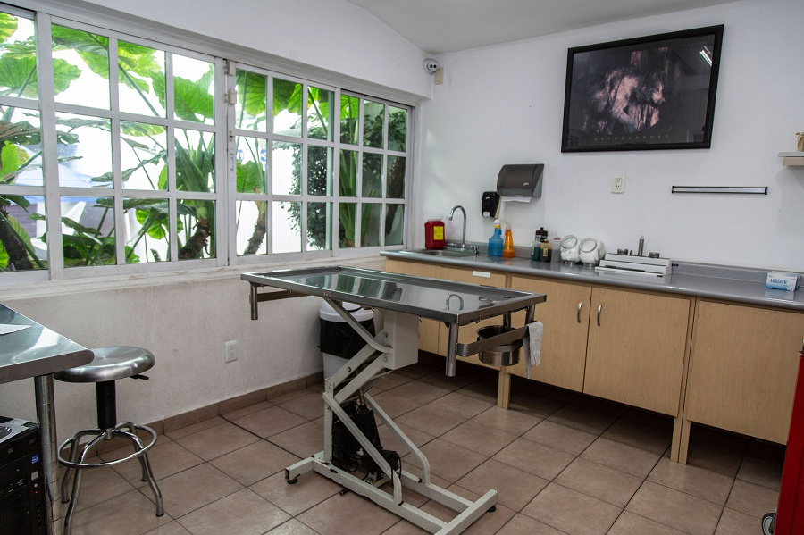

SERVICIOS
En la Clínica Veterinaria Cachorritos brindamos los siguientes servicios de primera calidad para nuestros clientes.
Cirugía
En la Clínica Veterinaria Cachorritos contamos con quirófano equipado con anestesia inhalada y monitores trans quirúrgicos en donde al anestesista se le permite visualizar permanentemente las constantes de las mascotas como son el electrocardiograma, frecuencia respiratoria, cantidad de oxigeno y bióxido de carbono circulante en el organismo de nuestra mascota, entre otras mientras son intervenidas quirúrgicamente, nuestro quirófano cuenta también con la instrumentación suficiente para la práctica de cirugía en tejidos blandos y ortopedia contando con expertos cirujanos en diferentes disciplinas.
Hospitalización
La Clínica Veterinaria Cachorritos cuenta con las instalaciones y el personal capacitado para brindar el internamiento de pacientes con fines tanto terapéuticos como diagnostico en donde se requiere la supervisión e intervención continua (24 horas). Cuenta con la flexibilidad para ofrecer hospitalización diurna en donde los pacientes son internados durante el día para la supervisión y administración de fármacos o tratamientos mientras los propietarios trabajan.
Medicina interna
En la Clínica Veterinaria Cachorritos contamos con los métodos diagnósticos y tratamiento de las enfermedades de los órganos internos de manera no quirúrgica con este fin hemos incorporado equipos de laboratorio, imagenología, electrocardiografía, entre otros y también colaboran un excelente equipo de expertos en disciplinas como oftalmología (Dr. Fred Pineda), cardiología (Dra. Beatriz Miranda), medicina de la conducta (Dr. Ernesto Ávila Escalera), acupuntura y rehabilitación (Dra. Gabriela Goyz), cirugía ortopédica (Dr. Isidro Castro Mendoza). Todos y cada uno de los médicos veterinarios de la Clínica Veterinaria del Bosque, cuenta con los reconocimientos oficiales y certificaciones que les permite ofrecer medicina interna veterinaria de alta calida
Imagenología
La Clínica Veterinaria Cachorritos cuenta con métodos diagnósticos de alta calidad como son radiología de alta frecuencia que es un equipo de rayos X gentil con el medio ambiente y con mucho menor riesgo para el personal que labora en el área, cumpliendo con las normas oficiales mexicanas al respecto. Se cuenta también con ecosonografía y endoscopía de fibra óptica, estas técnicas complementarias ayudan a tener métodos diagnósticos confiables para enfocar la terapia de manera eficiente. Contamos con los equipos más modernos en imagen tal es el caso de radiología digital el cual permite alta definición en imagen radiología y ultrasonografía con doppler y 3ra. dimensión.
Laboratorio de análisis clínico
La Clínica Veterinaria Cachorritos cuenta con laboratorio integrado que le permite correr pruebas como química sanguínea en húmeda y seca, lo que facilita la obtención de datos a cualquier hora y en cuestión de minutos, hemograma (biometría hemética), coproparasitología, prueba que ayuda a la detección de parásitos o huevos de los mismos en heces fecales, serología, estas últimas técnicas nos permiten detectar enfermedades como parvovirus canino, SIDA felino, leucemia viral felina, gusano de corazón o pancreatitis. Por todo no tenemos que recurrir a laboratorios externos ni esperar días para obtener los resultados. Se cuenta con tecnología de punta para realizar en tiempo de consulta pruebas como gasometría, hemograma, general de orina, química sanguínea (entre otras) en 20 minutos lo que permite tener los resultados en ese momento y poder dar diagnósticos y pronósticos oportunos.
Etología (medicina de la conducta)
Personal certificado en la conducta animal: mal comportamiento, agresividad, etc. La medicina de la conducta es la disciplina de la medicina veterinaria encargada de prevenir y corregir enfermedades conductuales como la depresión, síndromes como: auto mutilación, persecución de cola y otras que son degradantes para nuestras mascotas y deterioran la relación humano-animal.